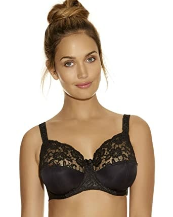
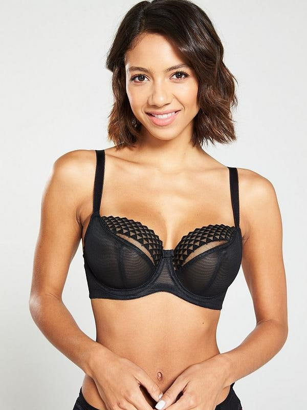
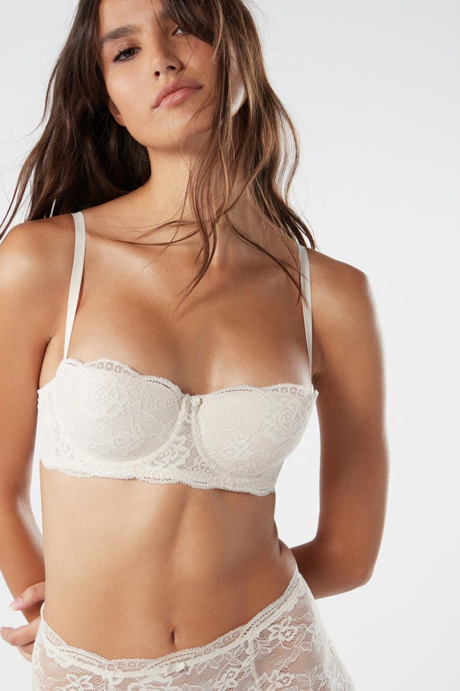
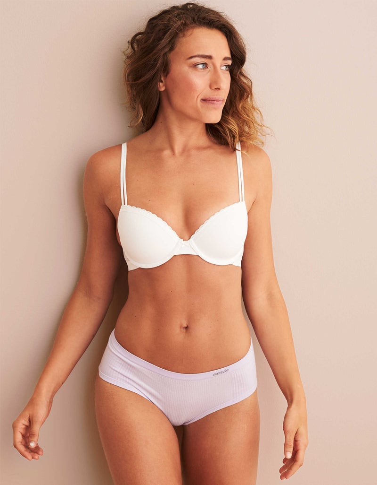
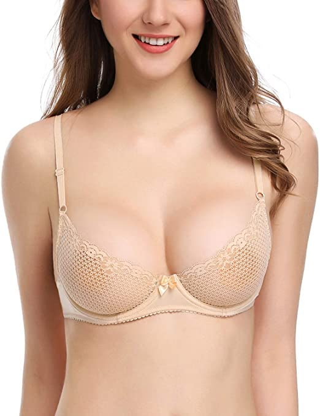
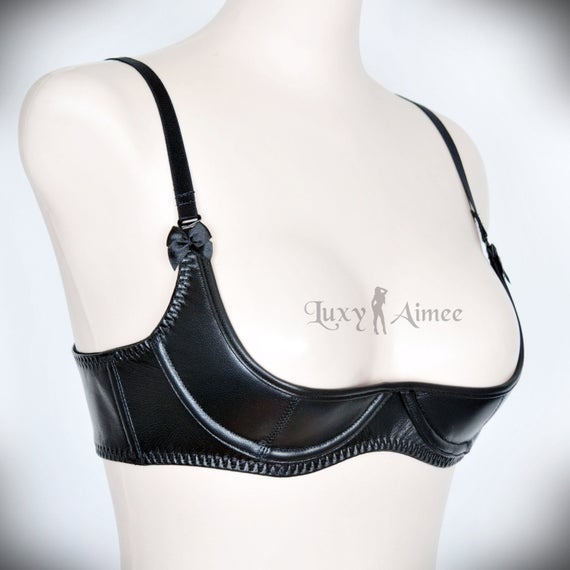
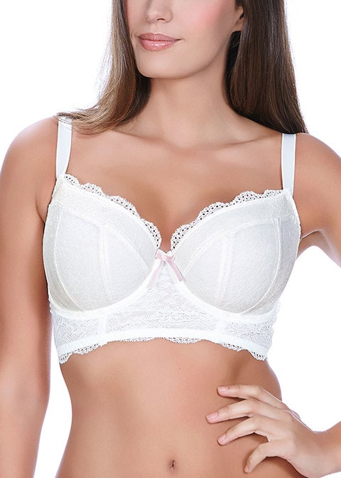
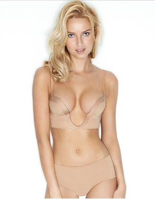

All About Bras — Cup Styles (Part 2)
This is the direct continuation of Cup construction, part 1. Part 1 covered cup construction (moulded vs. seamed, and the seam types); part 2 covers cup shapes — how much of the chest each style covers, and what that means for fit.
Hello, rysSO here!
Last time, we looked at cup types by the material and construction method, summarised in this table:
| Moulded cup | Non-moulded (cut-and-sewn) cup | ||||
|---|---|---|---|---|---|
| Moulded cup | Seamed cup | Seamless cup | |||
| Horizontal seam | Diagonal seam | Curved seam | Vertical seam | ||
This time, let's look at cup shapes! Cup shape is divided, first of all by how much of the chest it covers, into: full coverage / full cup, balcony (balconette), demi, and quarter.
Full coverage / full cup
A full-coverage bra has a centre gore that comes up high and encloses the whole chest. Because the gore comes up so high, the breasts never touch each other, so cleavage naturally doesn't form. Because it covers all the way up to the upper chest, no breast tissue shows outside the bra. Full cups usually have a closed upper edge, so they suit FOB (full-on-bottom) shapes better than FOT (full-on-top) — for an FOT bust, a bra that covers the upper chest can feel stuffy and small.

Balcony / balconette
A balcony bra covers about 3/4 of the chest area, and the gore is lower than a full cup. Unlike a full-cup, only 3/4 of the breast is covered, so the upper part of the breast tissue is exposed. Because the gore is still fairly high and only the top of the chest is open, it gives that pin-up-girl look where the upper bust rounds upward when you wear it.
But it's not always exactly a 3/4 cup — sometimes you find balcony bras that cover only about 1/2 of the chest. A 1/2-cup balcony is recommended for FOT. For FOB, wearing a 1/2-cup balcony means that from the side, the top of the chest doesn't form a / | line but a ┚ | line, which can make the upper bust look even emptier.


Demi
A demi bra also covers about 3/4 to 1/2 of the chest area, but the big difference from the balcony is the height of the gore — a demi's gore is lower. If a balcony divides the chest more horizontally, a demi divides it a bit more vertically. In Korea this is the most standard style; the vast majority of bras are demis.


Quarter
A quarter bra covers just 1/4 of the chest. Naturally the gore is about the same height as a demi or lower. Most of the chest is exposed and it doesn't cover the bust point.

Styles by functional design
Beyond coverage, bras also differ by functional design: a bra with a long band extending down is a longline bra, one with a low gore that allows cleavage is a plunge bra, a completely smooth bra with no decoration is a t-shirt bra, and a bra with detachable shoulder straps is a multiway bra.
Longline bras come in many variations — some go all the way down to the navel in a corset-like shape, others just cover down to the ribs. The band isn't rigid: it doesn't dig in painfully and has good stretch, so apparently less uncomfortable than you'd expect!

Plunge bras expose the space between the breasts. Demi bras are a kind of plunge, and a very low-gore version is called a deep plunge.

A t-shirt bra is one where, when you wear a T-shirt over it, absolutely nothing of the bra shows through as a ridge or line. Most t-shirt bras are plain moulded cups — though very rarely you'll find one that's neither moulded nor seamless and still qualifies.
A multiway bra has detachable shoulder straps — so you can wear it strapless, or cross the straps in an X shape at the back.
Knowing this much means you'll be able to find the style of bra you want, anytime, anywhere. :)